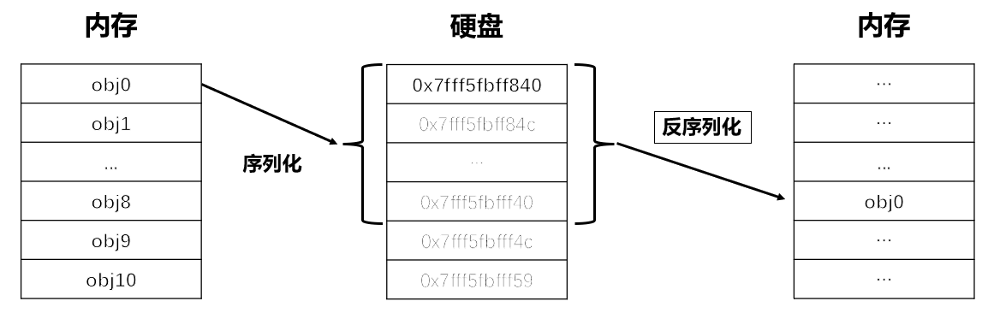
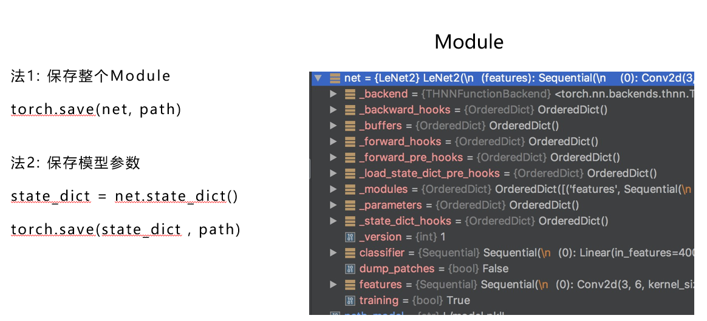

7.1 模型保存与加载
保存与加载的概念（序列化与反序列化）
模型训练完毕之后，肯定想要把它保存下来，供以后使用，不需要再次去训练。
那么在pytorch中如何把训练好的模型，保存，保存之后又如何加载呢？
这就用需要序列化与反序列化，序列化与反序列化的概念如下图所示：

因为在内存中的数据，运行结束会进行释放，所以我们需要将数据保存到硬盘中，以二进制序列的形式进行长久存储，便于日后使用。
序列化即把对象转换为字节序列的过程，反序列化则把字节序列恢复为对象。
在pytorch中，对象就是模型，所以我们常常听到序列化和反序列化，就是将训练好的模型从内存中保存到硬盘里，当要使用的时候，再从硬盘中加载。
torch.save / torch.load
pytorch提供的序列化与反序列化函数分别是
1.
torch.save(obj, f, pickle_module=pickle, pickle_protocol=DEFAULT_PROTOCOL, _use_new_zipfile_serialization=True)
功能：保存对象到硬盘中
主要参数：
- obj- 对象
- f - 文件路径
2.
torch.load(f, map_location=None, pickle_module=pickle, **pickle_load_args)
功能：加载硬盘中对象
主要参数：
- f - 文件路径
- map_location - 指定存储位置，如map_location='cpu'， map_location={'cuda:1':'cuda:0'}
这里的map_location大有文章，经常需要手动设置，否者会报错。具体可参考以下形式：
GPU->CPU：torch.load(model_path, map_location='cpu')
CPU->GPU：torch.load(model_path, map_location=lambda storage, loc: storage)
两种保存方式
pytorch保存模型有两种方式
保存整个模型
保存模型参数
我们通过示意图来区分两者之间的差异

从上图左边知道法1保存整个nn.Module， 而法2只保存模型的参数信息。
我们知道一个module当中包含了很多信息，不仅仅是模型的参数 parameters，还包含了buffers, hooks和modules等一系列信息。
对于模型应用，最重要的是模型的parameters，其余的信息是可以通过model 类再去构建的，所以模型保存就有两种方式
所有内容都保存；
仅保存模型的parameters。
通常，我们只需要保存模型的参数，在使用的时候再通过load_state_dict方法加载参数。
由于第一种方法不常用，并且在加载过程中还需要指定的类方法，因此不做演示也不推荐。
对于第二种方法的代码十分简单，请看示例：
net_state_dict = net.state_dict()
torch.save(net_state_dict, "my_model.pth")
常用的代码段
在模型开发过程中，往往不是一次就能训练好模型，经常需要反复训练，因此需要保存训练的“状态信息”，以便于基于某个状态继续训练，这就是常说的resume，可以理解为断点续训练。
在整个训练阶段，除了模型参数需要保存，还有优化器的参数、学习率调整器的参数和迭代次数等信息也需要保存，因此推荐在训练时，采用以下代码段进行模型保存。以下代码来自torchvision的训练脚本。
checkpoint = {
"model": model_without_ddp.state_dict(),
"optimizer": optimizer.state_dict(),
"lr_scheduler": lr_scheduler.state_dict(),
"epoch": epoch,
}
path_save = "model_{}.pth".format(epoch)
torch.save(checkpoint, path_save
# =================== resume ===============
# resume
checkpoint = torch.load(path_save, map_location="cpu")
model.load_state_dict(checkpoint["model"])
optimizer.load_state_dict(checkpoint["optimizer"])
lr_scheduler.load_state_dict(checkpoint["lr_scheduler"])
start_epoch = checkpoint["epoch"] + 1
小结
模型保存与加载比较简单，需要注意的有两点：
- torch.load的时候注意map_location的设置；
- 理解checkpoint resume的概念，以及训练过程是需要模型、优化器、学习率调整器和已迭代次数的共同配合。